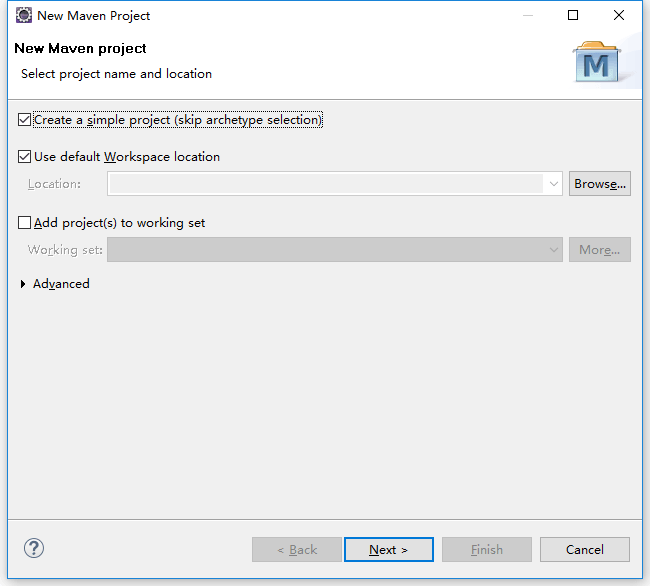
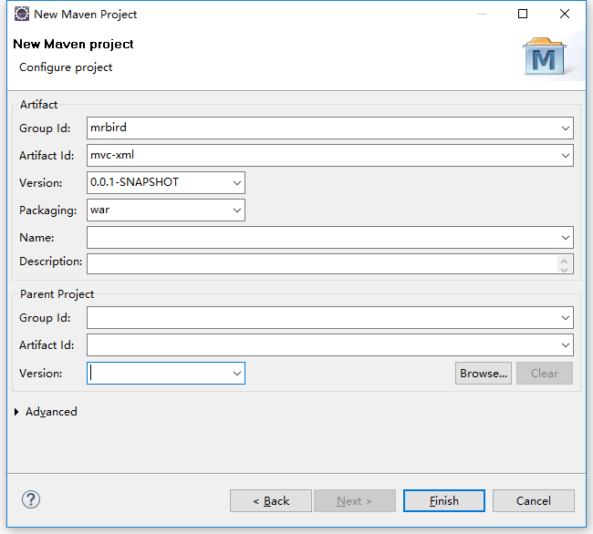
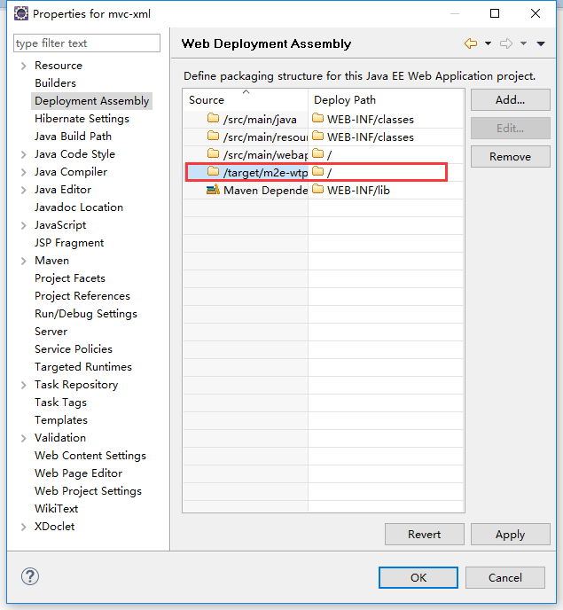
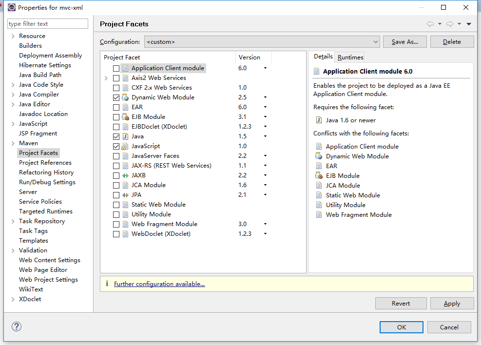
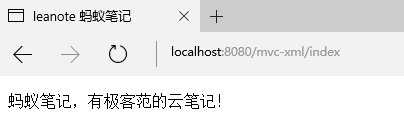

guide
下图展示了请求在Spring MVC中的过程：
环境准备
使用Maven构建Spring web MVC project。
新建Maven Project（选中skip archetype selection）:

点击next，然后填写Group Id和Artifact Id，打包方式为war：

finish后，右击项目，选择properties，选中Deployment Assembly，移除选中的路径：

apply后选择Project Facets，勾选Dynamic Web Module，点击下方的Further configuration avaiable：

如下填写后确定即可：

准备好后，在pom中引入依赖以及配置tomcat插件：
1 | <dependencies> |
XML配置搭建
web.xml中配置DispatcherServlet：
1 | <!-- 配置dispatcherServlet --> |
配置applicationContext.xml：
1 |
|
编写一个最简单的cotroller：
1 | import org.springframework.stereotype.Controller; |
编写一个最简单的页面：
1 | <%@ page language="java" contentType="text/html; charset=utf-8" |
一切准备就绪，启动项目，访问http://localhost:8080/mvc-xml/index：

JavaConfig配置搭建
配置DispatcherServlet：
1 | import org.springframework.web.servlet.support |
WebConfig：
1 |
|
新的WebConfig类还扩展了WebMvcConfigurerAdapter并重写了其configureDefaultServletHandling()方法。通过调用DefaultServletHandlerConfigurer的enable()方法，我们要求DispatcherServlet将对静态资源的请求转发到Servlet容器中默认的Servlet上，而不是使用DispatcherServlet本身来处理此类请求。
RootConfig：
1 |
|
Controller和JSP页面同上。